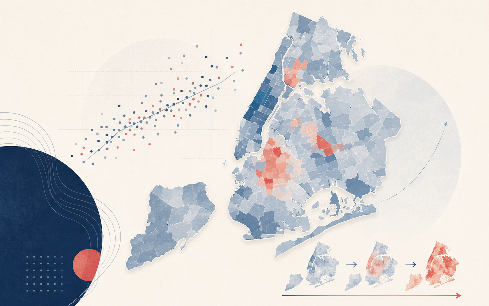
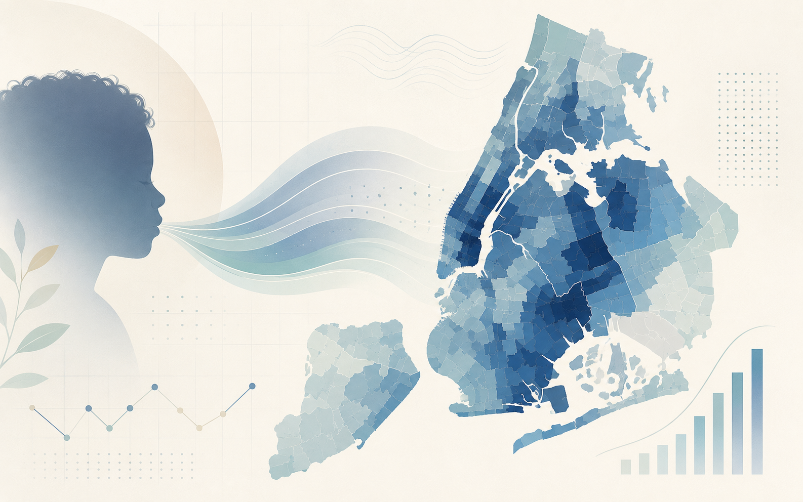
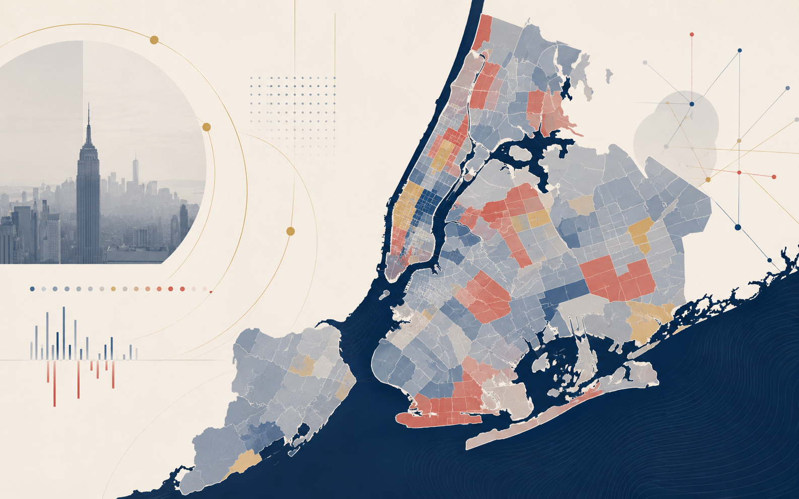
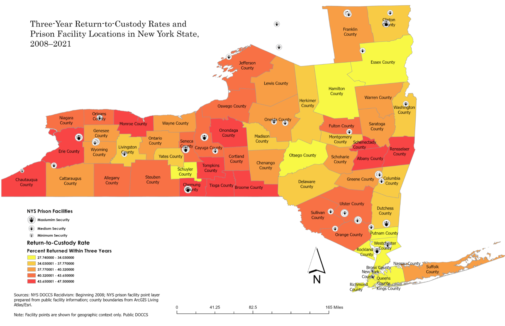

About
A brief overview of my research and visualization work.
I am a John Jay College graduate student whose work combines public data, spatial analysis, research writing, and accessible visualization. My projects examine how public safety, health, demographic, and criminal justice outcomes are distributed across communities.
This portfolio highlights public-facing visualization projects using open data, mapping tools, and responsible demographic-data framing.
Featured Portfolio Projects
Selected public-facing projects using open data, spatial analysis, and accessible visual storytelling.
Featured Project
NYC Shooting Redistribution Map
This project is the centerpiece of the portfolio. It analyzes how shooting incidents shifted across New York City neighborhoods from 2016–2025, with a focus on how citywide public safety gains can obscure persistent neighborhood-level exposure to gun violence.

NYC Shooting Redistribution Map
Interactive public safety visualization analyzing shooting redistribution across New York City neighborhoods from 2016–2025.

NYC Youth Asthma Map
Public health visualization examining youth asthma patterns across New York City neighborhoods.

NYC Political Demographic Map
Interactive map examining neighborhood-level demographic and political patterns across New York City.
European Crime and Prison Indicators Map
Comparative visualization using European crime and prison indicator data to examine cross-national justice trends.

NYS DOCCS Recidivism Interactive Dashboard
Interactive dashboard analyzing three-year return-to-custody outcomes, county variation, and prison facility context in New York State.
Skills & Tools
Core methods and software reflected across these projects.
Current Focus
Themes guiding ongoing research and public work.
I am developing public-facing research and visualization projects on uneven public safety, neighborhood exposure to violence, public health disparities, prison oversight, racial equity, and community-centered approaches to criminal legal reform.
Interpretive Note
How demographic and contextual variables are used in these projects.
Demographic data in these projects are used as neighborhood or population context. They should not be interpreted as individual-level claims about victims, offenders, patients, voters, or residents.